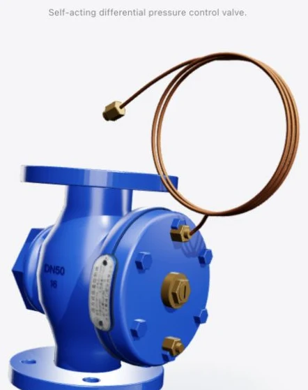

ZTY47-16 · FRIESGO
自力式流量控制阀
Self-acting flow control valve.

正在打开三维产品…
01 / 完整外观A–A · 中心剖切
Drag to rotate · Pinch to zoom
3D is unavailable. Please try Safari or Chrome.
真实几何。自由观察。
ZTY47-16 · FRIESGO
Self-acting flow control valve.

正在打开三维产品…
Drag to rotate · Pinch to zoom
3D is unavailable. Please try Safari or Chrome.
真实几何。自由观察。